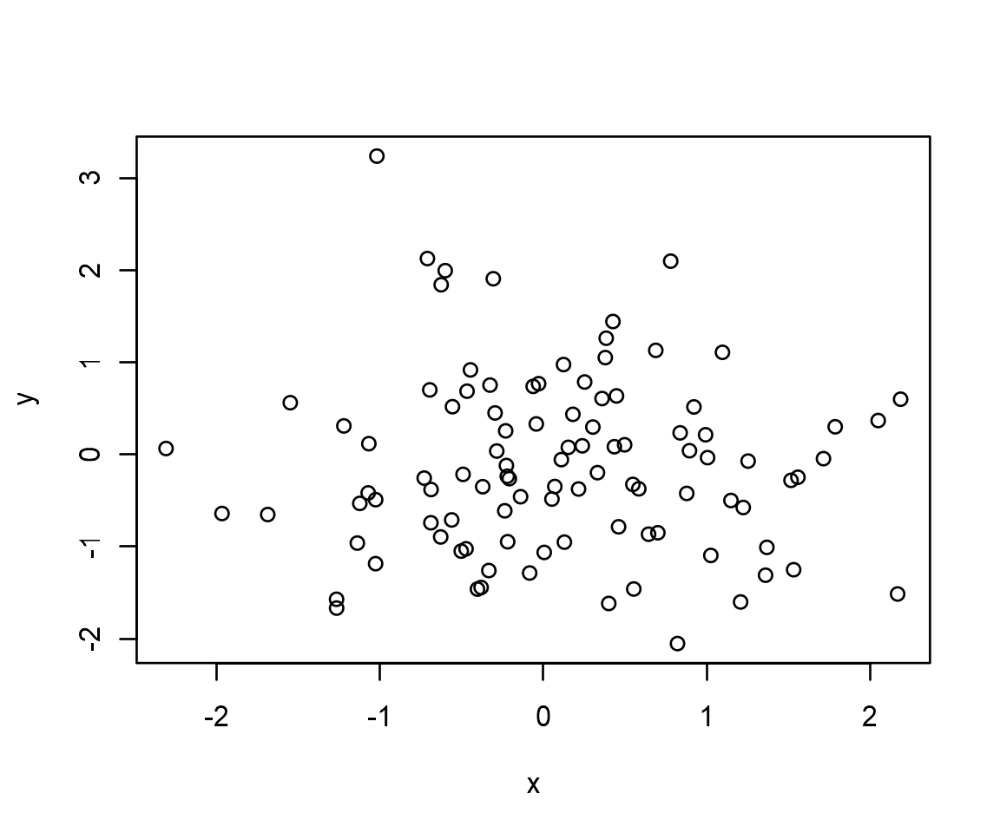
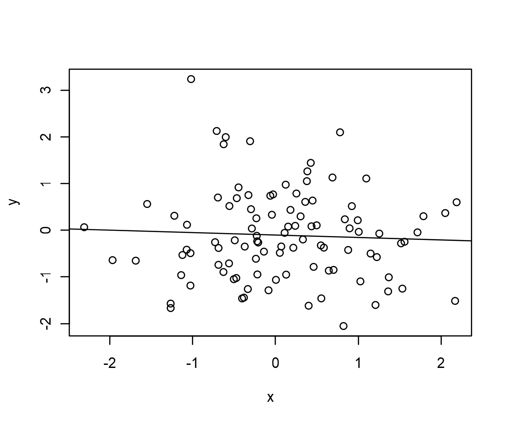
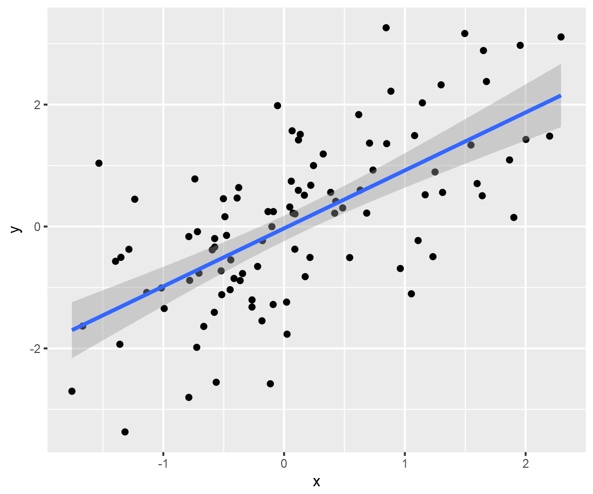

Aula 1 Introdução
O R é um ambiente de programação desenvolvido por originalmente por estatísticos, para estatísticos. Por conta disso, uma de suas maiores potencialidades é precisamente o vasto conjunto de facilidades que ele oferece para realizarmos análises de dados – e, particularmente, para estimarmos modelos de regressão.1
Nesta primeira aula, veremos um dos modelos mais simples, mas também um dos mais utilizados, de regressão: o modelo linear simples, estimado por mínimos quadrados ordinários (MQO).2 Entre outros, aprenderamos a visualizar relações lineares bivariadas; a usar a função básica para estimar modelos lineares, lm; e a obter resultados detalhados de um modelo. Também usaremos alguns dados, que estão na pasta de materiais desta aula.
1.1 Visualizando relações entre duas variáveis
Podemos usar gráficos para visualizar relações entre variáveis. Podemos, por exemplo, criar duas variáveis contínuas, geradas aleatoriamente com a função rnorm, e plotar sua relação com um gráfico de pontos.

É possível ver que as variáveis que criamos, y e x, não parecem ter relação. Na verdade, os pontos no gráficos estão dispersos, o que dificulta detectar algum padrão.
Para investigarmos isso detidamente, usamos um modelo linear estimado por mínimos quadrados ordinários (MQO). A função que estima esse tipo de modelo chama-se lm, e ela está contida no R-base. Portanto, não precisamos carregar nenhum pacote para usá-la, basta executar o seguinte código:
##
## Call:
## lm(formula = y ~ x)
##
## Coefficients:
## (Intercept) x
## -0.10280 -0.05247A utilização da função lm é simples. Em primeiro lugar, precisamos passar como argumento da função uma fórmula contendo a especificação do nosso modelo. No exemplo, y é nossa variável dependente e, assim, aparece do lado direito do operador ~. x, dessa forma, é nossa variável independente, ou explicativa, ou, ainda, preditora.
Podemos salvar os resultados de um modelo em um objeto para facilitar a sua manipulação.
Uma das vantagens disso é que, agora, podemos usá-lo para traçar um reta com valores preditos de y em relação a x, que resume a relação entre ambas, no gráfico que criamos anteriormente. Para tanto, usamos apenas a função abline.

Realmente, não há relação substantiva entre y e x, como indica a melhor reta estimada via MQO.
1.2 Visualizando relações entre variáveis em um banco
Daqui até o fim dessa aula, usaremos um banco de dados como exemplo para praticarmos o básico de construção de modelos bivariados. Esse arquivo chama-se X, e está nos materiais complementares dessa aula. Como ele está no formato .csv, podemos carregá-lo com a função read_csv do pacote readr.
Usando names e head, podemos ver algumas das variáveis desse data.frame.
## [1] "x" "y"## # A tibble: 6 x 2
## x y
## <dbl> <dbl>
## 1 2.20 1.48
## 2 1.31 0.560
## 3 -0.265 -1.20
## 4 0.543 -0.509
## 5 -0.414 -0.851
## 6 -0.476 -0.145Em particular, vamos trabalhar com duas dessas variáveis: a X e a Y. Nosso objetivo será investigar se existe relação entre X e Y usando um modelo linear por MQO. Como essas variáveis estão dentro de um banco de dados, existe um modo mais fácil de visualizar a relação entre elas usando o pacote ggplot2. Especificamente, esse pacote contém um geom chamado geom_smooth que serve para plotar uma curva trançando a relação entre duas (ou mais, como veremos adiante) variáveis. Criamos esse gráfico com o seguinte código:
library(ggplot2)
ggplot(banco, aes(x = x, y = y)) +
geom_point() + # Adiciona os pontos
geom_smooth(method = "lm") # Adiciona a curva, estimada por um modelo linear
Como se depreende do código acima, só precisamos especificar um método na função geom_smooth que, no caso, é "lm", de linear model. Mais importante, nesse caso parece haver uma clara associação entre as duas variáveis.
1.3 Interpretando os resultados de um modelo linear
Para examinarmos formalmente a relação entre X e Y, vamos recorrer novamente à função lm. Como temos um data.frame agora, e não mais dois vetores em objetos diferentes, usaremos um argumento da função lm para passar as variáveis do banco para ela. O argumento chama-se data =, e precisamos apenas passar a ele o nome do data.frame que contém nossas variáveis.
Note que podemos estimar o mesmo modelo sem usar o argumento data, mas precisaremos usar em seu lugar indexadores (o que é mais trabalhoso e não recomendado):
Para exibir de forma condensada os resultados do nosso modelo salvo em meu_modelo, basta digitar o nome do objeto no console:
##
## Call:
## lm(formula = y ~ x, data = banco)
##
## Coefficients:
## (Intercept) x
## -0.03031 0.95094Os dois modos produzem o mesmo resultado, ainda que o segundo seja o mais adequado. Mas, afinal, o que significa esse output da função lm. Podemos resumi-lo em duas partes:
- Abaixo de
Call:, a funçãolmapenas exibe a chamada que usamos para rodar nosso modelo, incluindo aqui a fórmula usada;
- Abaixo de
- O mais importante, contudo, segue abaixo de
Coefficients:, indicando a estimativa dos parâmetros, ou coeficientes, do efeito da variável independente, X, sobre a variável dependente, Y, além de um intercepto (ou constante).
- O mais importante, contudo, segue abaixo de
Com isso, podemos concluir rapidamente duas coisas: primeiro, a associação entre Y e X é positiva, uma vez que um aumento da variável X em uma unidade prediz um aumento de 0.9509352 unidades de Y; segundo, quando o valor de X é igual a zero, nosso modelo prediz que o valor de Y será igual a -0.0303123. Obviamente, isso condiz o gráfico que fizemos anteriormente.
1.4 Obtendo resultados detalhados
Ainda que exibir os resultados da forma como fizemos seja útil para uma inspeção rápida, existem outras informações úteis que precisamos acessar para avaliarmos um modelo. Para obtê-las, usamos a função summary, que já vimos anteriormente.
##
## Call:
## lm(formula = y ~ x, data = banco)
##
## Residuals:
## Min 1Q Median 3Q Max
## -2.4412 -0.6537 0.0080 0.7412 2.5266
##
## Coefficients:
## Estimate Std. Error t value Pr(>|t|)
## (Intercept) -0.03031 0.10515 -0.288 0.774
## x 0.95094 0.11036 8.617 1.2e-13 ***
## ---
## Signif. codes: 0 '***' 0.001 '**' 0.01 '*' 0.05 '.' 0.1 ' ' 1
##
## Residual standard error: 1.043 on 98 degrees of freedom
## Multiple R-squared: 0.4311, Adjusted R-squared: 0.4253
## F-statistic: 74.25 on 1 and 98 DF, p-value: 1.204e-13Afora a linha iniciada por Call:, que já vimos, essa função retorna uma série de novas informações. Vamos em partes:
Residuals:exibe algumas estatísticas sobre a distribuição dos resíduos de nosso modelo, isto é, toda variação em Y que não é explicada pelas nossas variáveis independentes – e que, formalmente, são consideradas absorvidas pelo termo de erro;
Coefficients:reporta, aqui também, informações sobre as estimativas e inferências de nosso modelo, incluindo aqui a estimativa do efeito de nossas variáveis independentes e intercepto (abaixo deEstimate); o erro-padrão (Std. Error) de cada estimativa, que indica a incerteza envolvida nelas; T-valor,t value, uma métrica normalmente usada para calcular P-valores em modelos de regressão (i.e., que é igual à estimativa divido pelo erro-padrão); e, finalmente, P-valor,Pr(>|t|), a famosa estatística usada para testar se o efeito indicado por cada estimativa é (P-valor > 0.05) ou não (P-valor < 0.05) fruto de variação aleatória.3;
Signif. codes:é a legenda para indicar os asteríscos que, eventualmente, aparecem nos coeficientes para indicar que uma estimativa possui P-valor menor que um determinado patamar;
Residual standard error:indica resumidamente quanta variação nosso modelo não dá conta de explicar, numa escala em que 0 indica que o modelo prediz exatamente o valor de nossa variável dependente, e valores maiores, o contrário; normalmente, é usada como medida de ajuste para comparar o desempenho preditivo de modelos;degrees of freedom(i.e., graus de liberdade), por outro lado, é o número observações usadas para estimar o modelo menos o número de parâmetros estimados (no nosso caso, 100 observações e dois parâmetros, a estimativa de X e do intercepto), útil para calcular P-valores e outras estatísticas;
Multiple R-squared:eAdjusted R-squared:são métricas simples que indicam a quantia de variação explicada pelo nosso modelo, onde 1 indica que toda a variação é explicada (e, logo, nossas variáveis predizem perfeitamente os valores de Y);
- Por fim,
F-statistic:indica o resultado de um teste que serve para indicar se a inclusão de variáveis no nosso modelo possui melhor poder preditivo do que um modelo sem variáveis, apenas com intercept (no nosso caso, como o P-valor desse teste é menor que 0.05, isso é verdade).
- Por fim,
Por ora, não vamos nos deter nessas estatísticas, mas elas serão extremamente úteis em aplicações reais, seja para saber quanta variação é explicada pelo nosso modelo, indicar se um coeficiente é significativo, ou mesmo realizar inferências.
1.5 Acessando informações de um objeto lm
Assim como outras informações no R, nosso modelo salvo no objeto meu_modelo contém diversas informações dentro dele. Por exemplo, podemos extrair um vetor com nossas estimativas usando:
## (Intercept) x
## -0.03031231 0.95093517Essa e outras informações salvas dentro do objeto podem ser vistas com names:
## [1] "coefficients" "residuals" "effects" "rank"
## [5] "fitted.values" "assign" "qr" "df.residual"
## [9] "xlevels" "call" "terms" "model"Também é possível salvar o output da função summary para fazer a mesma coisa.
Feito isso, temos à disposição todas as estatísticas reportadas pela função summary dentro de um mesmo objeto, o que pode ser usado, por exemplo, para extrair rapidamente apenas o R-quadrado de nosso modelo, como abaixo.
## [1] 0.4310566Isso será bastante útil em algumas situações que veremos adiante. Por enquanto, tente explorar as informações contidas dentro dos objetos resumo e meu_modelo e tente identificar o que indicam.
Exercícios
Por exemplo, o R CRAN Task View fornece vários compilados com materiais e pacotes para
Rsobre temas como análise de séries temporais e econometria (que nada mais é do que um subconjunto de ferramentas estatísticas mais apropriadas para análises normalmente feitas nas Ciências Sociais).↩Para um explicação rápida de como esse método de estimação funciona, ver aqui.↩
A título de curiosidade, o P-valor é calculado com base na estatística T de cada variável e outra informação que cobriremos a seguir, os graus de liberdade do modelo.↩